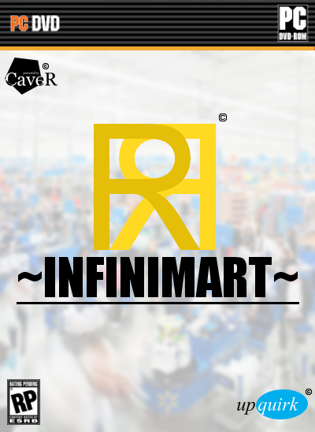
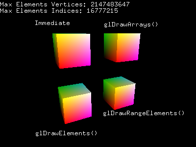

Infinimart
"Infinimart" is a game about searching for your lost grandmother in an infinitely generating department store, the idea for which was initially created jointly by Vahkiti, Fishspill, and QSKSw. Creative differences have prevented the game from proceeding past the design phase. As of this writing Infinimart is to be an isometric first-person rouge-like free-world sandbox RPG mini-games collection with or without intrusive cutscenes.
[ Home ]